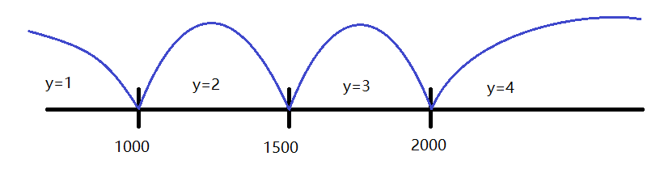

第四章
选择结构程序设计
4.2 if语句
4.3 关系运算符和关系表达式
4.3.1 关系运算结果和布尔类型
- 关系运算，指的是对两个量进行比较（大于>，大于等于>=, 小于<，小于等于<=, 不等!=，相等==），其结果就是两个： 真（TRUE）， 假（FALSE）
- 传统上，C语言用 0来表示假, 用 非0来表示真, 为了方便编程，常常定义两个符号常量
#define FALSE 0, 但在实践中，由于各个不同编程人的自由发挥，导致很混乱
#define TRUE !FALSE - C99为了统一这个问题的解决方案，引入了
bool类型变量, 需要包含stdbool.h文件，然后在程序中可以使用bool定义变量，两个常量true, false
4.3.1 关系运算结果和布尔类型
#include<stdbool.h>
#include<stdio.h>
int main(void)
{
int a;
printf("input a week number:"); scanf("%d", &a);
if(a < 1 == true){
printf("error.\n");
}
else{
bool result = a > 1 && a < 7 ;
....
}
}4.3.2 关系运算符及其优先级
- 六种关系运算符，前四个优先级比后两个高，同级则遵循 “左→右” 的结合律：
- 小于：
< - 小于等于：
<= - 大于：
> - 大于等于：
>= - 等于：
== - 不等于：
!=
- 小于：
- 关系运算符的优先级高于赋值运算符，低于算数运算符
4.3.3 关系运算表达式
- 用关系运算符将两个数值或表达式连起来的式子
- 关系运算表达式的结果是一个逻辑值，即真(true)或假(false)
0表示假， 虽然C语言中以非0为真，但是当关系运算出结果时，一般编译器会指定用1表示真，参考下面的例子：if(3)printf("this is true.\n");
else printf("this is false.\n");输出:this is true.printf("%d\n", 3<4);输出:1int a=30; if( 50>a>10 )printf("true\n");else printf("false\n");输出:false
4.3.3 关系运算表达式
- 所以，如果写
==的时候少写了一个=, 就可能出错:#include<stdbool.h> #include<stdio.h> int main(void) { int a; printf("input a number:"); scanf("%d", &a); if(a=0){ //应该：if( a== 0) printf("error.\n"); } else{ printf("let us do something greate!\n"); .... } }
4.3.3 关系运算表达式
- 为了减少这样的问题，可以改写为:
#include<stdbool.h> #include<stdio.h> int main(void) { int a; printf("input a number:"); scanf("%d", &a); if( 0==a ){ //就算少写一个=， 变成 0=a, 由于0不能是左值，所以会在编译时就检查出来 printf("error.\n"); } else{ printf("let us do something greate!\n"); .... } }
4.4.1 逻辑运算符
| 运算符 | 含义 | 举例 | 说明 |
|---|---|---|---|
| && | 逻辑与 | a && b | 如果 a、b都为真，则结果为真，否则为假 |
| || | 逻辑或 | a || b | 如果 a、b有一个为真，则结果为真，否则为假 |
| ! | 逻辑非（取反） | !a | 如果 a为真，则结果为为假, 反之为真 |
4.4.1 逻辑运算符
- 逻辑运算符的优先级：最高的是
!,&&和||的优先级一样； - 同样的优先级，按照从左→右的结合律；
4.4.2 逻辑表达式
- 逻辑运算和关系运算的结果都是逻辑值（真
1或假0)，使得有些关系表达式可以简化，比如：if(a!=0)等效于if(a)if(a==0)等效于if(!a)
- 注意区别：
- 当判断是真假时：
0为假，非0为真； - 当计算关系表达式和逻辑表达式的结果时：假则结果为
0，真则结果为1；
- 当判断是真假时：
4.4.2 逻辑表达式
- 注意短路效应：
- 对于
if( 表达式1 && 表达式2), 当表达式1为假(0),表达式2不会被计算和验证，这称之为 短路效应
, 最后输出为：int a=10, b=1; if( a>30 && (b=3)<a){ printf("a=%d, b=%d\n", a, b); }else{ printf("a=%d, b=%d\n", a, b); }a=10, b=1 - 对于
if( 表达式1 || 表达式2), 当表达式1为真(1),表达式2不会被计算和验证
- 对于

|
合理利用 逻辑表达式，可以简化判断的条件，比如：闰年的判断： |
if(year % 400 == 0 || (year % 4 == 0 && year % 100 != 0))
printf("%d is leap year.\n", year);
else
printf("%d is NOT leap year.\n", year);4.5 条件运算符和条件表达式
- 对于 真则赋一个值 假则赋另一个值 的情况，C语言可以用一个简单的条件运算符组成条件表达式，这也是C语言的唯一的一个三元运算符
if(a>b)max=a;else max=b;可以写为max=(a>b)?a:b;
例4.4 从键盘输入一个字符，判断是否大写字母，如果是就转换为小写字母，否则保留原样，输出最后的字符
#include<stdio.h>
int main(void)
{
char c;
c = getchar();
c = (c >= 'A' && c <= 'Z') ? (c+'a'-'A'):c;
putchar(c);
return 0;
}4.6 选择结构的嵌套
- 对于 嵌套 的if语句，其
else对应的是 与最近的上一个if, 比如: if(a < 1000) y=1; else if (a > 2000) y=4; else if (a < 1500) y=2; else y=3;
4.7 switch语句
switch是多分枝选择语句
#include<stdio.h>
void do_file(void); //函数声明
void do_edit(void); //函数声明
void do_view(void); //函数声明
int main(void)
{
int choice; //变量声明
show_menu:
printf("--------------Menu--------------\n");
printf(" [1] File.\n");
printf(" [2] Edit.\n");
printf(" [3] View.\n");
printf(" [0] Quit.\n");
printf("Input your command [0--3]:");
scanf("%d", &choice);
switch(choice){
case 1: do_file(); break;
case 2: do_edit(); break;
case 3: do_view(); break;
case 0: printf("Bye!\n"); break;
default:
printf("The input number must between 0 -- 3. \n");
goto show_menu;
}
return 0;
}小测试
1.选择题
1.1 以下程序的输出结果是
#include<stdio.h>
int main(void)
{
int a=1,b=3;
if( (++a<0) && (b--<=0))
//++a → 2，2＜0是假，短路效应，执行else语句，b保持=3
printf("%d,%d\n",a,b);
else
printf("%d,%d\n",b,a); //显示：3，2
return 0;
}2,21,33,2<--3,1
1.2 以下程序的输出结果是
#include<stdio.h>
int main(void)
{
int a=3,b=4,c=5,t=79;
if(b<a && a<c)
//(b＜a ＆ a＜c) → (4＜3 ＆ 3＜5) → 0 (假，false)
t=a;
a=c; //a ← 5
c=t; //c ← 79
if(a<c && b<c)
//(a＜c ＆ b＜c) → (5＜79 ＆ 4＜79) → 1 (真，true)
t=b; //t ← 4
b=a; //b ← 5
a=t; //a ← 4
printf("%d %d %d\n",a,b,c);//显示：4 5 79
return 0;
}3 4 54 5 79<--5 4 379 4 3
1.3 以下程序的输出结果是
#include<stdio.h>
int main(void)
{
int i=0;
repeat_it:
switch (i){
case 1: printf("%d ", i);
case 2: printf("%d ", i);
default : printf("%d ", i);
}
i++;
if( i <3 )goto repeat_it;
return 0;
}011122<--012012020120
2.填空题
2.1 写出下列逻辑表达式的值，设a=3, b=4, c=5
a+b>c && b==c:(3+4>5 && 4==5) → (1&&0) → 0a||b+c&&b-c:(3||4+5&&4-5) → (3||9&&-1) → (1&&-1) → 1!(a>b)&&!c||1:(!(3>4)&&!5||1) → (!0&&!5||1) → (1&&0||1) → (0||1)→ 1!(x=a)&&(y=b)&&0):(!(x=3)&&(y=4)&&0)) → (0&&(y=4)&&0)) → 0, x=3, y=??!(a+b)+c-1&&b+c/2:(!(3+4)+5-1&&4+5/2) → (4&&6)→ 1
2.2 写出下列逻辑表达式的值，设c=5
(c==2)||(c==4)||(c==6):((5==2)||(5==4)||(5==6)) → 0(c>=2 && c<=6)&& !(c%2):((5>=2 && 5<=6)&& !(5%2)) → ((1 && 1)&& 0) → 0(c>=2 && c<=6)&&(c%2!=1):((5>=2 && 5<=6)&&(5%2!=1)) → ((1 &&1)&&0) → 0(c>=2 && c<=6) || (c!=3) || (c!=5):((5>=2 && 5<=6) || (5!=3) || (5!=5)) → ((1 && 1) || 1 || 0 ) → 1
3.编程题
3.1 给出一百分制成绩，要求输出成绩等级'A'(90-100),'B'(80-89),'C'(70-79),'D'(60-69),'E'(0-59)
#include<stdio.h>
int main(void)
{
float score;
char grade;
input_score:
printf("input a score[0--100]:");
scanf("%f", &score);
if(score<0 || score>100){
printf("error input. ");
goto input_score;
}
switch( (int)(score/10)){
case 10: case 9: grade='A'; break;
case 8: grade='B'; break;
case 7: grade='C'; break;
case 6: grade='D'; break;
case 5: case 4: case 3: case 2: case 1: case 0:
grade='E';break;
}
printf("score=%.2f, grade=%c\n", score, grade);
return 0;
}3.2 给一个不多于5位的正整数，要求：
- 求出其是几位数；
- 分别输出每一位数字；
- 逆序输出每位数字;
#include<stdio.h>
#include<math.h>
int main()
{
long int a, t;
int i=0, d1, d2, d3, d4, d5;
input_data:
printf("input a positive integer number < 100000 :");
scanf("%d", &a);
if(a<0 || a>=100000){
printf("error input.\n");
goto input_data;
}
int digit_number;
digit_number = log10(a)+1;
printf("%d\n", digit_number);
d5 = a / 10000;
d4 = (a - d5*10000)/1000;
d3 = (a - d5*10000 - d4*1000)/100;
d2 = (a - d5*10000 - d4*1000 - d3*100)/10;
d1 = a % 10;
switch(digit_number){
case 5: printf("%d%d%d%d%d\n", d5,d4,d3,d2,d1);
printf("%d%d%d%d%d\n", d1,d2,d3,d4,d5);
break;
case 4: printf("%d%d%d%d\n", d4,d3,d2,d1);
printf("%d%d%d%d\n", d1,d2,d3,d4);
break;
case 3: printf("%d%d%d\n", d3,d2,d1);
printf("%d%d%d\n", d1,d2,d3);
break;
case 2: printf("%d%d\n", d2,d1);
printf("%d%d\n", d1,d2);
break;
case 1: printf("%d\n", d1);
printf("%d\n", d1);
break;
}
return 0;
}